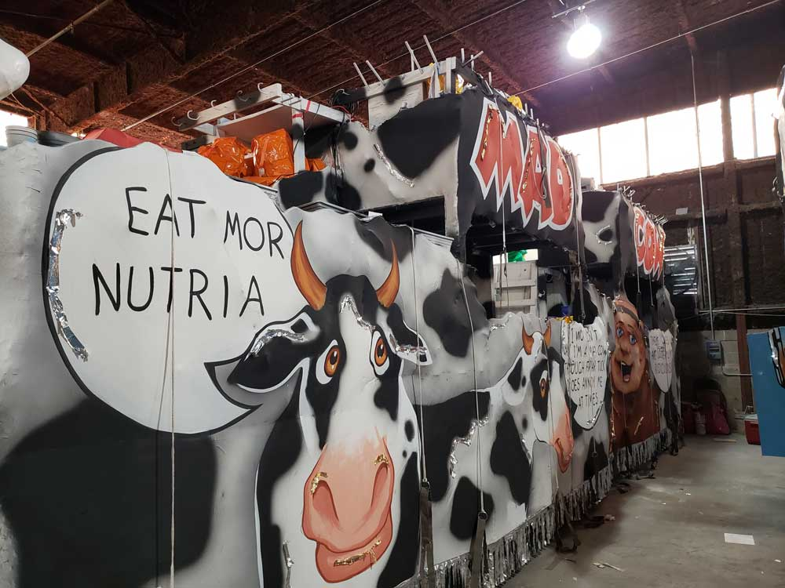
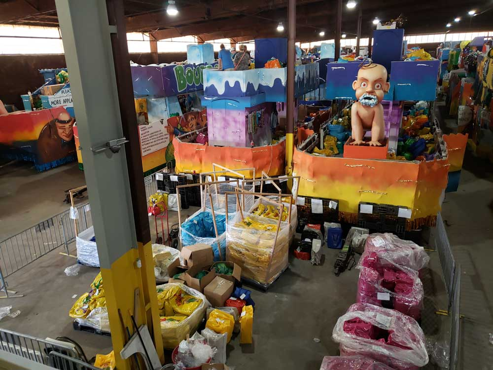
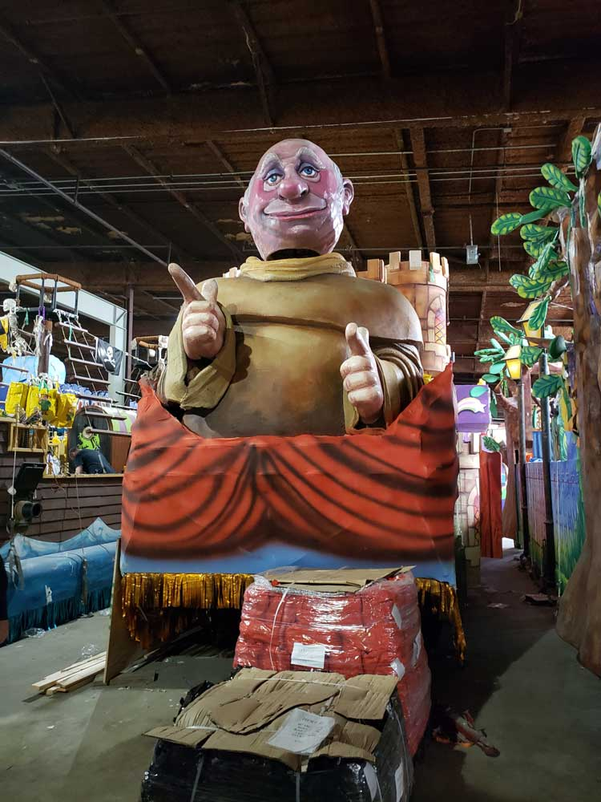
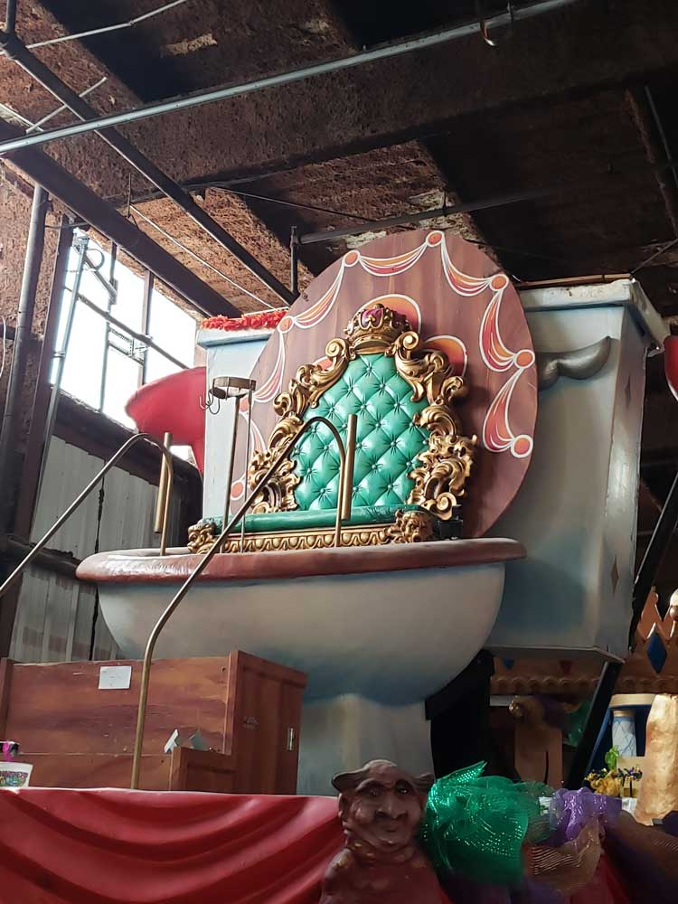

Behind-the-scenes attraction showcasing the artistry and craftsmanship of Mardi Gras through massive parade floats, props, costumes, sculptures, and working studios where New Orleans carnival traditions come to life.
General Information
First admission: 9:30am
Last admission: 4:30pm
Closed Christmas Day, Thanksgiving Day, Easter, and Mardi Gras Day
Advance online ticket purchases are available.
How to Get There
From the French Quarter (2 mi): Follow Convention Center Boulevard and Port of New Orleans Place toward the riverfront. Mardi Gras World is located near the New Orleans cruise terminals and offers shuttle service from select downtown locations.
Overview
Mardi Gras World is a tourist attraction located in New Orleans. Guests tour the 300,000 square foot working warehouse where floats are made for Mardi Gras parades in New Orleans. Mardi Gras World is located along the Mississippi River, next to the New Orleans Morial Convention Center. Their events venue, the River City Complex, also hosts festivals, weddings, private parties and corporate events.
In 1946, Blaine Kern, Sr. founded Blaine Kern Artists. Kern came from a family of float builders, but began creating floats after 1947, when a surgeon and krewe captain who had seen a mural by Kern hired him to create floats for the Krewe of Alla. Kern's business expanded from there. Kern, who traveled to Europe to learn float building techniques, has gained an international reputation in float building, with floats beyond New Orleans for Las Vegas, Mobile, Galveston, Montreal and the Universal Studios Mardi Gras parade.
In 1984, Mardi Gras World was created as a tourist attraction to show visitors a behind-the-scenes look at float building.
This article uses material from the Wikipedia articles "Mardi Gras World", which are released under the Creative Commons Attribution-Share-Alike License 3.0



